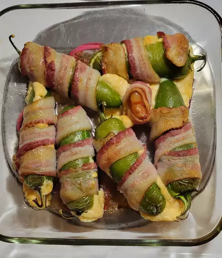

Home
Bacon Wrapped Jalapeno Poppers

I have to admit, I have a weakness for jalapeno poppers.
As much as I love them, I’ve never made them at home,
because I’m not a fan of deep frying in my own kitchen.
These bacon wrapped jalapeno poppers are baked instead of fried, and let me say, they’re even better than the original!
Who can resist fresh jalapenos stuffed with cheese, wrapped in bacon and baked to crispy perfection? Not me, that’s for sure.
This is the ultimate party or game day snack.
Ingredients
- ½ cup cream cheese
- ½ cup shredded sharp Cheddar cheese
- 12 jalapeno peppers, halved lengthwise, seeds and membranes removed
- 12 slices bacon
Steps
- Gather ingredients. Preheat the oven to 400 degrees F (200 degrees C). Line a baking sheet with aluminum foil.
- Mix cream cheese and Cheddar cheese together in a bowl until evenly blended. Fill each jalapeño half with cheese mixture.
- Put halves back together and wrap each stuffed pepper with a slice of bacon. Arrange bacon-wrapped peppers on the prepared baking sheet.
- Bake in the preheated oven until bacon is crispy, 25 to 35 minutes.
- Serve hot with your favorite dipping sauce. Enjoy!